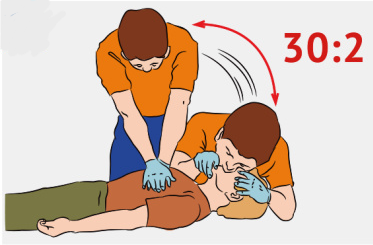

Сердечно-лёгочная реанимация
Сердечно-лёгочная реанимация (СЛР) — это комплекс неотложных мероприятий, направленных на поддержание жизнедеятельности организма.
СЛР проводиться только на твёрдой поверхности.
Алгоритм проведения:
- Вызовите скорую медицинскую помощь.
- Оцените обстановку, убедитесь в безопасности оказания первой помощи.
- Определите наличие сознания у пострадавшего.
- Определите наличие пульса и самостоятельного дыхания. Для проверки дыхания следует наклониться щекой и ухом ко рту и носу пострадавшего и в течение 10 сек. попытаться услышать его дыхание, почувствовать выдыхаемый воздух на своей щеке и увидеть движения грудной клетки у пострадавшего.
- Восстановить проходимость дыхательных путей. Расстегните ремень и откройте доступ к груди. С помощью ткани (марли) круговыми движениями пальцев удалите слизь, кровь и иные инородные тела из полости рта. Запрокиньте голову пострадавшего. Приподнимите подбородок, удерживая шейный отдел позвоночника. При подозрении на перелом шейного отдела позвоночника данное действие не выполняется.
- Зажмите нос пострадавшего большим и указательным пальцами. Используя устройство личной безопасности типа «рот-устройство-рот», герметизируёте полость рта. Плавно выдохните пострадавшему в рот. Дайте ему 2-5 секунд на выдох. Контролируйте: поднимается ли грудь пострадавшего при вдохе и опускается ли при выдохе.
- Сцепите пальцы рук в замок и приложите к груди пострадавшего на уровне сосков. Воспроизведите надавливание строго вертикально по линии, соединяющей грудину с позвоночником. Надавливания выполняйте плавно, тяжестью верхней половины тела с прямыми руками. Глубина продавливания должна быть не менее 5-6 см, а частота не менее 100-120 надавливаний в минуту.
- Чередуйте 30 надавливаний с 2 вдохами до приезда скорой помощи.
- Если пострадавший самостоятельно задышал – придайте ему устойчивое боковое положение.